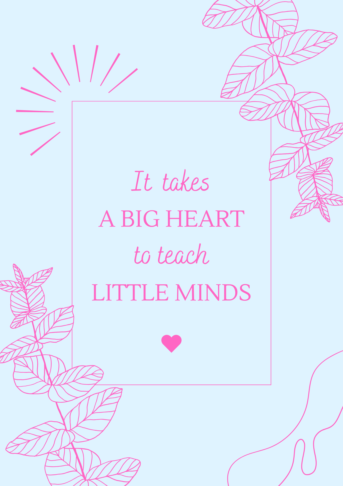

Teaching Practice
On this page you will be able to access my core beliefs and teaching philosphy.
Core Beliefs
I am committed to creating inclusive, future-focused learning environments that empower students to develop both technical skills and critical thinking. My teaching is rooted in authenticity, accessibility, and equity, with learning experiences designed to reflect real-world industry practices while supporting a diverse range of learners — especially those historically underrepresented in STEM.
I emphasize student agency through project-based learning, tangible computing, and creative expression, helping students see themselves as capable designers, problem- solvers, and active contributors to the digital world. Whether Im teaching HTML, CSS, and JavaScript, multimedia production, or quantum programming, I foster an iterative learning process that builds both confidence and competence.

Teaching philosphy
I believe education should equip students with both technical skills and the confidence to shape a more ethical, inclusive, and sustainable future.As a TAS teacher, I design real-world learning experiences that support diverse learners by embedding culturally responsive pedagogy, accessibility, and environmental awareness.I model lifelong learning by engaging with industry and continuously reflecting on my practice.My goal is for students to see themselves as capable, creative problem-solvers with the potential to make a meaningful impact.
Creating a Supportive Learning Environment
Using calming music in the classroom helps create a focused and relaxed atmosphere,particularly during hands-on, project-based tasks with junior students. This simple strategy supports sensory regulation, enhances concentration, and helps reduce anxiety, contributing to a more inclusive and supportive learning environment.